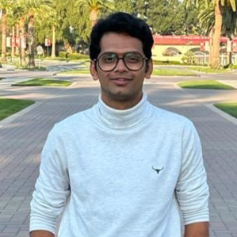

Hello, I’m Parth Bhalerao 👋
I’m a Ph.D. student in Computer Science and Engineering at Santa Clara University, working with Dr. Oana Ignat at the AIM Lab. I am currently looking for Research Internship opportunities in AI, Machine Learning, and Deep Learning.
My research focuses on Agentic AI, Multi-Agent Systems, Multimodal AI, RAG, multilingual AI, and scalable LLM systems. I work across text, image, video, and audio, with an emphasis on building intelligent systems that can reason, retrieve, collaborate, and operate over complex real-world data. My recent research spans multilingual mentorship QA, multicultural text-to-image and text-to-video generation, multimodal evaluation, and AI agents, with work presented at EMNLP 2026, ACL 2026, and EACL 2026.
During my Data Science Internship at CORSAIR, I worked on production-focused applied AI systems. I built a multi-agent multimodal design review platform using LLM/VLM agents, RAG, and text + vision analysis, reducing review effort by more than 95%. I also developed an AI e-commerce cross-sell/up-sell recommendation pipeline using BGE dense retrieval, BCE-trained positive/negative pairs, LambdaMART, LLM pairwise judging, re-ranking, and retrieval/ranking evaluation.
Beyond model development, I am interested in efficient AI systems and deployment, including CUDA, GPU/multi-GPU workloads, vLLM concurrency and KV-cache management, MLIR/LLVM-based compilation, edge devices, and distributed infrastructure. I have also worked on large-scale multimodal datasets, GPU-optimized video processing, healthcare ML, computer vision, and recommendation systems.
Beyond research and industry work, I have authored multiple research publications and hold a patent for a biomedical healthcare device integrating machine learning. My broader goal is to build scalable, adaptive, and efficient AI systems that connect cutting-edge research with real-world deployment.
Technical Expertise
- AI & Machine Learning: Deep Learning, Agentic AI, Multi-Agent Systems, Multimodal AI, LLMs/VLMs, RAG, NLP
- Retrieval & Ranking: BGE dense retrieval, Vector Databases, Learning-to-Rank, LambdaMART, LLM pairwise judging, re-ranking, recommendation systems
- Model Deployment & Systems: CUDA, GPU/multi-GPU optimization, vLLM concurrency & KV-cache management, MLIR/LLVM compilers, edge devices, distributed infrastructure
- Frameworks & Tools: Python, C/C++, PyTorch, TensorFlow, scikit-learn, HuggingFace, LangChain, CrewAI, OpenCV, NumPy, Pandas, SQL
- Research: Multilingual and multicultural AI, multimodal datasets, low-resource data, model evaluation, scalable AI systems
I am currently seeking Research Internships in AI/ML/DL, while also being open to Machine Learning, Applied AI, Data Science, and Software Engineering opportunities where I can apply research ideas to real-world intelligent systems.